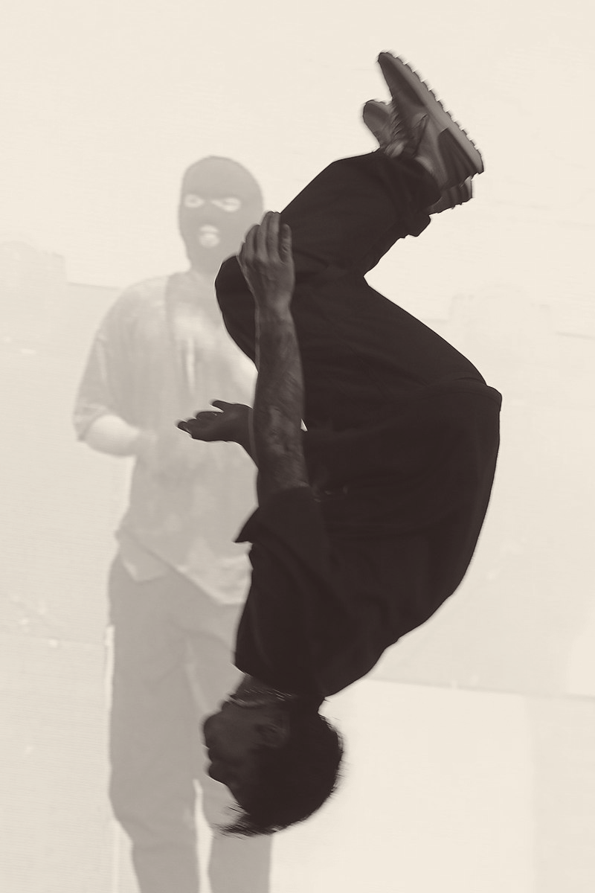

Histoire
Le groupe se forme en 2009 à Columbus, Ohio, par trois camarades de lycée: Tyler Joseph, Nick Thomas et Chris
Salih. Tyler Joseph attribue au groupe son nom en s'inspirant de l'ouvrage
All My Sons d'Arthur Miller qui parle d'un homme décidant du destin de sa famille après avoir tué 21
pilotes durant la Seconde Guerre mondiale à cause de la livraison de pièces d'avion défectueuses. Il explique
que la morale de l'histoire a inspiré le nom du groupe. Au milieu de l'année 2011, Nick Thomas et Chris Salih
quittent le groupe par manque de temps. Josh Dun a rejoint le groupe dès leur départ.
|  |
 |
|
|
Josh Dun en train de faire un backflip pendant un concert
|
Les membres fondateurs de Twenty One Pilots |
Tyler Joseph en train de performer en 2012 |